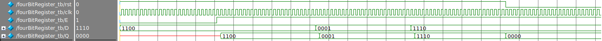

A load-enabled parallel 4-bit register, realized in Verilog:
1 2 3 4 5 6 7 8 9 10 11 | module fourBitRegister(D, rst, clk, E , Q); input [3:0] D; input rst, clk, E; output reg [3:0] Q; always @(negedge rst, posedge clk) if (!rst) Q <= 0; else if (E) Q <= D; endmodule |
And its corresponding test bench:
1 2 3 4 5 6 7 8 9 10 11 12 13 14 15 16 17 18 19 20 21 22 23 24 25 26 | module fourBitRegister_tb(); reg rst, clk, E; reg [3:0] D; wire [3:0] Q; fourBitRegister #() DUT ( .rst(rst), .clk(clk), .E(E), .D(D), .Q(Q) ); initial begin clk = 0; rst = 1; E = 0; D = 4'b1100; #500 @(posedge clk) E = 1; #10 @(posedge clk) D = 4'b1100; #500 @(posedge clk) D = 4'b0001; #500 @(posedge clk) D = 4'b1110; #500 @(posedge clk) rst = 0; #500 $finish; end always #10 clk =! clk; endmodule |
The waveform produced:
